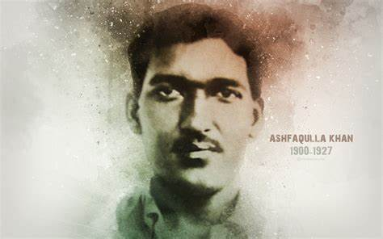
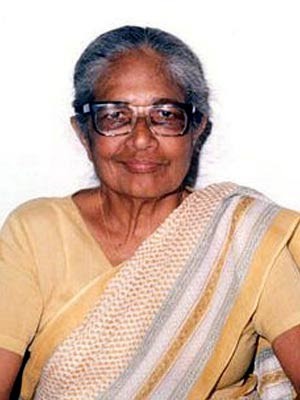
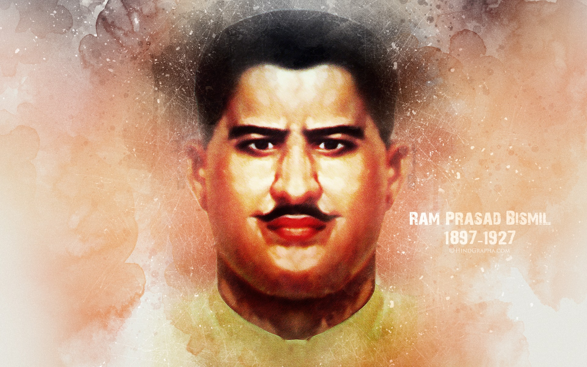

Freedom HEROES
1. Ashfaqulla Khan

Ashfaqulla Khan was one of the main minds behind the Kakori Conspiracy (Kakori Kand). Along with other revolutionaries including Ram Prasad Bismil and Chandrashekhar Azad, he looted the train carrying British government’s money in Kakori near Lucknow on August 9, 1925.
He managed to escape the police but was later betrayed by his friend. He was hanged on December 19, 1927.
The actions of Khan and his compatriots have been depicted in the Hindi film Rang De Basanti (2006),
2. Kanaklata Barua

Barua was born in the Borangabari village of the undivided Darrang district of Assam as the daughter of Krishna Kanta and Karneshwari Barua. Her grandfather Ghana Kanta Barua was a famous hunter in Darrang
During the Quit India Movement Barua joined the Mrityu Bahini, a death squad comprising groups of youth from the Gohpur sub division of Assam. On 20 September 1942, the Bahini decided she would hoist the national flag at the local police station
The Fast Patrol Vessel ICGS Kanak Lata Barua of the Indian Coast Guard, commissioned in 1997, is named after Barua.[6] A life size statue of hers was unveiled at Gauripur in 2011.[7] Her impassioned speech before her death, remains a source of inspiration for many. She laid down her life for the freedom of the country at the age of 17 year
3. Ram Prasad Bismil

Ram Prasad Bismil was another revolutionary who helped in successfully executing the Kakori Kand on August 9, 1925. Unfortunately, he was arrested on the morning of September 26, 2019. He was also executed along with Ashfaqulah Khan on December 19, 1927.
Throughout his life, Ram Prasad Bismil spread revolutionary thoughts by producing various books and distributing them. He wrote many patriotic poems in both Hindi and Urdu to urge people to fight for independence. His final letter to his mother before his hanging is taught to children in many schools.